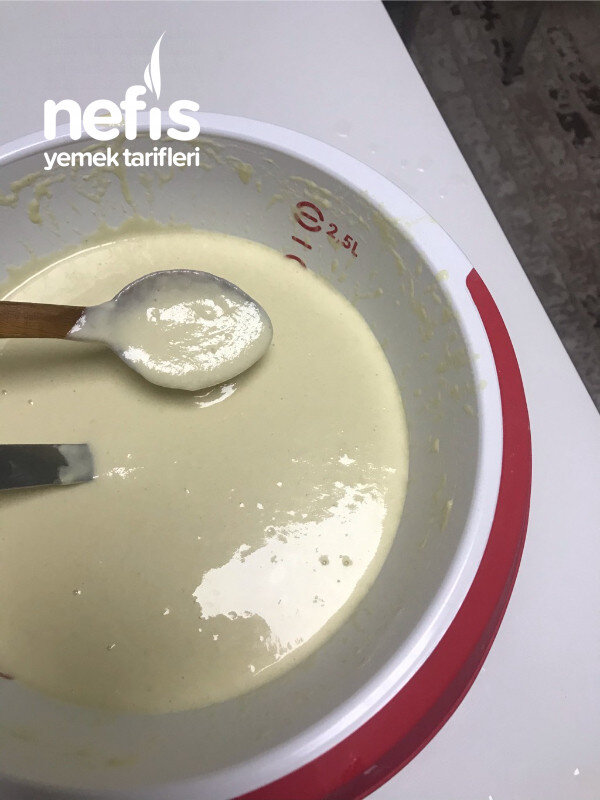
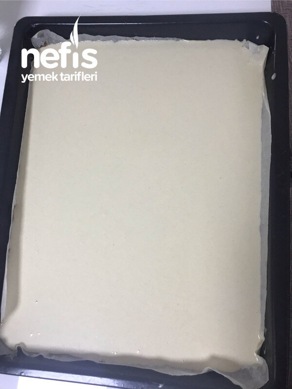
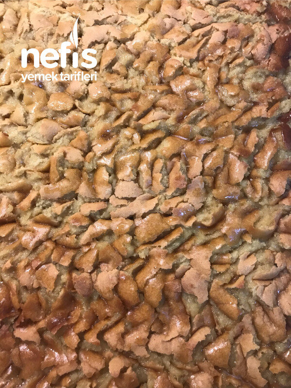
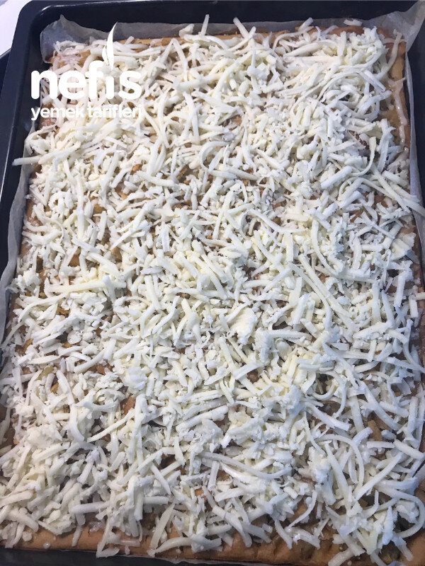
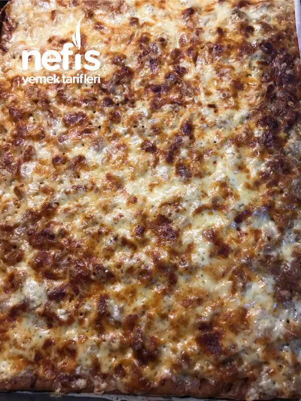
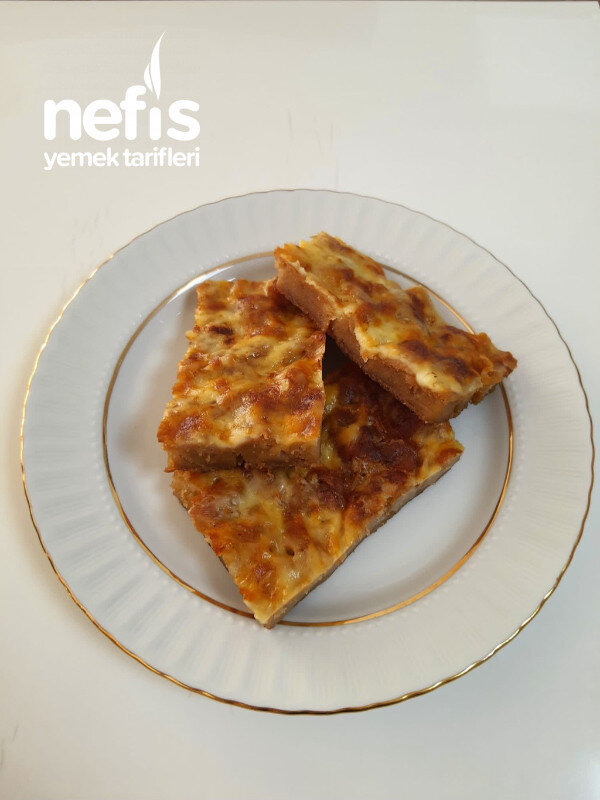

Kırlona (Yöresel Lezzetler)
2021-05-15
← Tüm tarifler

🍽️ 12-14 kişilik
⏱️ Hazırlık: 25 dk
🔥 Pişirme: 35 dk
🏷️ Hamur İşi Tarifleri
🏷️ Börek Tarifleri
Malzemeler
6 bardak un
4 bardak su
1 çay kaşığı soda
1 kaşık zeytinyağı
50-60 gram tereyağı
1 fincan kadar zeytinyağı
Kaşar ve tulum rendesi
Hazırlanışı
Un, su, soda ve zeytinyağı ile kek kıvamında hamur çırpılır.
Fırın kağıdı konulan tepsiye dökülür.
25-30 dakika 200 derecede kontrollü olarak pişirilir.
Çıkarınca kaşık yardımıyla küçük lokmalar yapılır.
Üzerine tereyağ ve zeytinyağı kızdırılıp kaşık kaşık her yerine dökülür.
3-5 dakika da böyle fırınlanır.
Fırından çıkarılıp üzerine peynir serpilir.
Tekrar fırına atılarak peynirler eriyene kadar pişirilir.
Fotoğraflar




